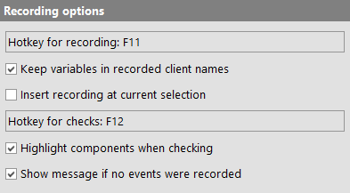
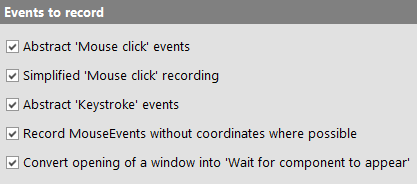
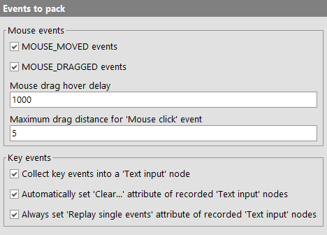
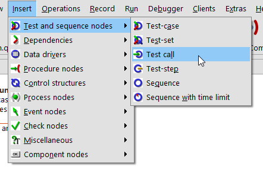
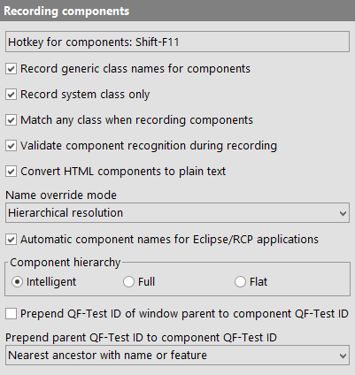
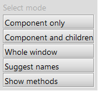
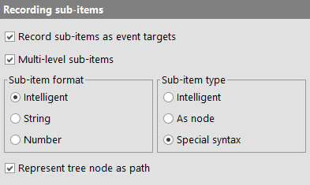
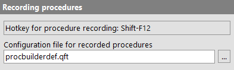

| Version 6.0.3 |
The following options determine which kinds of events are recorded and which filters are applied, how components are recorded and arranged, and how sub-items are handled.
|
|  | ||
|
| Figure 37.11: Recording options | ||
Controls the display of an initial question mark on the record button in order to directly lead new users to the quickstart wizard.
Event recording can be directly started/stopped by pressing a key in the SUT. The key to be used for this function is set through this option. To set an option, click into the field and press the desired key combination. The default key is [F11].
This option is very useful if the client name assigned to your
SUT contains variables (e.g. $(client)), which
generally makes sense when creating procedures. If this option
is set, the client attribute of all recorded nodes is set to the
unexpanded 'Client' value of the
'Start SUT client' node through which the SUT was started.
Depending on what you are currently working on, it may or may not make sense to add newly recorded sequences directly at the current insertion mark. If you deactivate this option, new recordings are placed in a new 'Sequence' under 'Extras'.
To simplify recording a sequence of events with interspersed checks, you can switch between plain recording and recording checks by pressing a key in the SUT. The key that triggers this switch is set through this option. To set an option, click into the field and press the desired key combination. The default key is [F12].
When QF-Test is recording checks, it can give visual feedback on the component the mouse is currently over by inverting its foreground and background colors. Rarely this may have unwanted visual side effects, so you can turn that feature off with this option.
When starting to record and stopping without interacting with the SUT in between, a message is shown indicating that no events were recorded. By deactivating this option that message can be suppressed.
These options specify which kinds of events are recorded and which aren't. You should not tinker with these unless you know what you are doing.
|
|  | ||
|
| Figure 37.12: Options for events to record | ||
Activating this option causes a sequence of MOUSE_MOVED,
MOUSE_PRESSED, MOUSE_RELEASED and MOUSE_CLICKED events to be
recorded as a single 'Mouse click' pseudo event (see subsection 38.8.1).
When recording 'Mouse click' events, this option should also be activated. Except for Drag&Drop and
special case MOUSE_MOVED events, recording is then based primarily on MOUSE_PRESSED events, turned into
'Mouse clicks'. This gives best results in most cases, even when QF-Test receives too few or too many
events from the SUT. If this option is turned off, the algorithm from QF-Test 4.0 and older is used. This
is worth a try in case a recorded sequence cannot be replayed directly.
This option lets you record a sequence of KEY_PRESSED,
KEY_TYPED and KEY_RELEASED events (or just KEY_PRESSED and
KEY_RELEASED for function keys) as a single 'Keystroke' pseudo
event (see subsection 38.8.2).
For many types of components and sub-items it doesn't matter where exactly a MouseEvent occurs. However, if large values are recorded for the X or Y coordinate of a 'Mouse event', there's the danger that the event might miss its target upon replay if the component has shrunk a little due to font changes or because the window has been resized. This is also a possible source for problems when converting a recorded sequence to a 'Procedure' with variable target components.
If this option is activated, QF-Test ignores the coordinates of recorded MouseEvents if it thinks that the coordinates don't matter for the target component, e.g. for all kinds of buttons, for menu items, table cells, list items and tree nodes. For the latter QF-Test distinguishes between clicks on the node itself and on the expand/collapse toggle. When MouseEvents without coordinates are played back, QF-Test targets the center of the respective component or item except that the X coordinate for items is limited to 5 because item bounds cannot always be calculated correctly.
When replaying a sequence during which a new window is opened,
it may be useful to allow for a longer than usual delay until
the window is opened. By activating this option, a recorded
WINDOW_OPENED event will be turned into a 'Wait for component to appear'
node automatically.
Web For web clients this option causes a 'Wait for document to load' node to be inserted whenever loading of a document completes. This is important for proper synchronization when navigating to another page.
In order to keep the amount of raw event data generated during normal use of a Java GUI manageable, QF-Test employs a set of recording filters and packers. These do their best to keep everything needed for successful replay and throw away the rest. To get an impression of the actual data behind a recorded sequence, try recording a short sequence with all of these turned off, and with 'Mouse click' and 'Keystroke' pseudo events disabled.
|
|  | ||
|
| Figure 37.13: Options for events to pack | ||
MOUSE_MOVED events (System)
MOUSE_MOVED events are especially frequent. Every mouse cursor
motion generates a handful of these. Under most circumstances,
only the last of a consecutive series of MOUSE_MOVED events is
actually useful, so all events except the last one are
dropped, if this option is activated. An example where this is
not advisable is recording some freehand drawing in a graphics
application.
Note One might think that MOUSE_MOVED events
are completely useless, since MOUSE_PRESSED or MOUSE_RELEASED
events have their own set of coordinates, but this is not the
case. Some Java components require a MOUSE_MOVED event before
a MOUSE_PRESSED event is recognized.
MOUSE_DRAGGED events (System)
MOUSE_DRAGGED events are like MOUSE_MOVED events, but with one
mouse button held down. Similarly, only the last of a series
of MOUSE_DRAGGED events is recorded unless you turn off this
option, except for special cases (see next option).
There are situations where not only the final target of a mouse drag is of interest, but intermediate points as well. The most common is invoking a menu item in a sub-menu.
Note As of QF-Test 1.05.2, the following no longer applies because
MOUSE_MOVED or MOUSE_DRAGGED events that are required
for opening sub-menus are not "optimized away" anymore. However, there may be
other situations where intermediate stops are useful when recording drags.
|
|  | ||
|
| Figure 37.14: Dragging to a sub-menu | ||
As illustrated above, creating a new 'Test call' node for a suite could be done by clicking on the »Insert« menu button, dragging the mouse to the »Test and Sequence nodes« item for the sub-menu, so the sub-menu pops up, then dragging on to the »Testcall« menu item and releasing the mouse button. Normally such a sequence would be reduced to a press, a drag to the final »Testcall« item and a release. It would fail to replay, since the sub-menu would never be popped up. To work correctly, an additional drag to the »Test and Sequence nodes« item must be recorded.
For that reason QF-Test recognizes a MOUSE_DRAGGED event as
important if you hover over an intermediate component for a
while during the drag. The delay (in milliseconds) needed to
recognize such an event is set through this option.
To record the above example correctly with this option set to 1000, you'd have to click on the »Insert« menu button, drag to the »Test and Sequence nodes« item and keep the mouse pointer stationary for one second, then move on to the »TestCall« sub-menu item and release the mouse button.
It sometimes happens unintentionally that the mouse cursor is
moved between pressing the mouse button and releasing it. This
movement may be registered as a MOUSE_DRAGGED event, depending
on the JDK version and the distance of the move. QF-Test is
able to compensate for small movements and still convert the click
into an abstract 'Mouse click' event. This option defines the maximum
distance between pressing and releasing the mouse button that
QF-Test will ignore. Every MOUSE_DRAGGED event above that
distance will be left unchanged.
Another example where a lot of events are generated is
entering a short string of text into a text field. Each
character typed leads to at least one KEY_PRESSED, one
KEY_TYPED and one KEY_RELEASED event. For additional fun,
the KEY_RELEASED events may arrive out of order or not at
all, depending on operating system and JDK version.
If this option is activated, sequences of KeyEvents on a text
component (to be exact: a component whose class is derived
from java.awt.TextField or
javax.swing.text.JTextField) are converted into a
'Text input' node. Only true character input is packed,
function or control keys or key combinations with
[Control] or [Alt]
are left unchanged.
When the packed sequence is replayed, only KEY_TYPED events
are generated. KEY_PRESSED and KEY_RELEASED events cannot be
generated, since the required key code is system dependent and
cannot be determined from the character alone. This is not a
problem however, since text components usually handle only
KEY_TYPED events and some special keys.
This option determines the value of the 'Clear target component first' attribute of a recorded 'Text input' node. If the option is not set, the attribute will not be set either. Otherwise, the 'Clear target component first' attribute is set if and only if the text field or text area was empty before the input started.
This option determines the value of the 'Replay single events' attribute of a recorded 'Text input' node. If the option is set, the attribute will be set and vice versa. The conservative way is to keep the option set, but for a typical application that does not add its own KeyListeners to text fields it should be safe to turn it off so as to speed up replay of 'Text input' nodes.
General information regarding the settings for recording of class names:
QF-Test can record classes of component in various ways, therefore it organizes component classes in various categories. Those categories are called as the specific class, the technology-specific system class, the generic class and the dedicated type of the generic class. Each category is recorded at 'Extra features'.
The option Record generic class names for components is checked by default. Using this option allows you to record generic classes in order to share and re-use your tests when testing a different technology with just minor changes to the existing tests.
Swing In case you work with one Java engine only and you prefer to work with the "real" Java classes, you could also work without the generic class recording. In this case you should consider to check the option Record system class only. This option makes QF-Test record the technology-specific system class instead of the derived class. If you switch off this option you will get the derived class which enables you to make a very well targeted recognition but could cause maintenance efforts in case of changes coming from refactoring. In case to derived classes were obfuscated you must not set this option.
|
|  | ||
|
| Figure 37.15: Options for recording components | ||
This option defines the key for a very useful functionality: recording components directly from the SUT. Pressing this key in the SUT will switch it to "component recording" mode, regardless of whether event recording is currently activated or not. To set an option, click into the field and press the desired key combination. The default key is [Shift-F11].
In this mode, clicking on a component with the mouse will cause the component to be recorded and added to the test-suite if it was unknown before. If more than one test-suite is currently opened, the menu item »Record«-»Receive components« determines the suite that will receive the components. The 'QF-Test ID' of the 'Component' is put on the clipboard so it can be pasted into any text field with [Control-V]. This latter feature is very handy when creating an event or a check from scratch.
|
|  | ||
|
| Figure 37.16: Popup menu for recording components | ||
You can also record a whole component hierarchy at once by clicking with the right mouse button instead. This will bring up a popup menu with the following four options:
setName(). All
components in the whole window are recorded and put into a
test-suite of their own. Each unnamed component for which a
name will improve testability is marked with a name of the
form "SUGGESTED NAME (n): suggestion". The running count in
braces is just used to avoid duplicates. The suggested name
is built from the component's class and other available
information. It should be taken with a grain of salt.
Normally "component recording" mode is turned off by either pressing the hotkey again or by selecting a component. If you want to record multiple single components, hold down an additional modifier key when switching to "component recording" mode. That way selecting a component will not turn off the mode, only pressing the hotkey again will.
Where possible QF-Test assigns generic class names to components like "Button", "Table" or "Tree" in addition to the actual Java, DOM or AJAX specific class names like "javax.swing.JButton", "javafx.scene.control.Button", "INPUT" or "X-BUTTON". These generic class names are more descriptive and robust, improve compatibility between different UIs and enable creation of generic utility procedures. Generic class names can be used for component recognition or registering resolvers. If this option is active, generic class names are recorded where available.
If this option is set, QF-Test does not record any custom classes for 'Components'. Instead it moves up the class hierarchy until it encounters a system class and records that. Set this option if the class names of your custom GUI classes tend to differ between releases.
Note You must activate this option if you intend to obfuscate the jar files of your application or if you are using a custom class loader to load your application's GUI classes.
For compatibility with older QF-Test versions that did not have generic classes, QF-Test now matches against several classes of a component when recording, the concrete class, the generic class and the system class. This is very useful if you want to retain as many of your old components as possible. If you would rather get new components based on generic classes in new recordings you should deactivate this option. Components recorded for the first time will always be recorded with the class determined by the preceding two options Record generic class names for components and Record system class only.
In case non-unique names are assigned to components QF-Test can still distinguish
between these components with the help of the 'Extra feature'
qfs:matchindex that specifies the index of the component with the
given name. If this option is set, QF-Test will check the name of the component
during recording and try to assign qfs:matchindex correctly.
Note You should only deactivate this option if you are sure that component names are "reasonably unique" and the component validation significantly impacts performance during recording.
Swing supports HTML markup in various kinds of labels, buttons and sub-elements of complex components. For component identification and validation, the HTML markup is often not useful and will clutter up things. If this option is set, QF-Test converts HTML to normal text by removing all HTML markup so only the actual text content is left.
Note There are two versions of this option which are closely related. This one is effective during recording, the other one during replay. Obviously, both options should always have the same value. There's one exception though: When migrating from one setting to another, QF-Test's components have to be updated. During that process, keep the replay option at the old setting and change this option to the new one. Be sure to update the replay setting after updating the components.
This option determines the weight given to the names of components for recording. Possible choices are:
Override everything
This is the most effective and adaptable way of searching components, but it
requires that the names of the components are unique, at least within the same
window. If that uniqueness is given, use this choice.
WebDon't use this value for a web page with frames. Use "Hierarchical
resolution" instead.
Hierarchical resolution
This choice should be used if component names are not unique on a per-window
basis, but naming is still used consistently so that two components with identical
names have at least parent components or ancestors with distinct names.
That way, component recognition is still tolerant to a lot of change, but if
a named component is moved to a different named parent in the SUT, the test-suite
will have to be updated to reflect the change.
Plain attribute
If there are components with identical names in the SUT within the same parent
component you must use this setting. The name will still play an important role in
component recognition, but not much more than the 'Feature'
attribute.
Eclipse and applications based on the Rich Client Platform (RCP) have a complex
GUI with support for changing perspectives. Such a change causes components to be
rearranged which can make it hard for QF-Test to recognize them unless names are set
at least on the major components. This is further complicated by the fact that the
structure of the components is not what it appears to be - the main components are
all arranged in a relatively flat hierarchy within the workbench. On the upside,
RCP based applications have a uniform inner structure based on Views
and Editors, many of which are named.
If this option is turned on, QF-Test will do its best to automatically associate GUI
elements with their RCP counterparts and assign names based on that association.
This can drastically improve component recognition for such applications. However,
if some names thus assigned turn out not to be reliable over time, they can also
interfere. In such a case, names can be assigned to the affected components either
using setData as described in chapter 5 or
with the help of a NameResolver as described in subsection 50.1.6. Both will override automatically generated names.
QF-Test supports three different kinds of views for the components of the SUT. For more information about their effect on component recognition, see section 44.1.
The flat view collects all components of a window as direct
child nodes of the respective 'Window' node. The
advantage of this view is that structural changes of the
component hierarchy have little effect on component
recognition. This is also its greatest disadvantage: since
structural information is not available, this view gives
reasonable recognition quality only if setName()
is used ubiquitously. Another drawback is the lack of
clearness.
The complement to the flat view is the full hierarchy. It
includes every single component of the SUT's GUI, emulating
all parent/child relationships. This view can be a useful tool
for developers or testers that want to gain insights into the
SUT's structure, but is not very applicable for testing,
since structural changes affect it too much. As long as you
don't change the GUI however, it will give you excellent
recognition without the help of setName().
A compromise between flat and full hierarchy is available through the choice "Intelligent". For this view only the "interesting" components of the SUT are recorded. "Interesting" in this case means that either the user can interact with the component, or it is located at some important point in the hierarchy, like the children of a split pane or a tabbed pane. In some later version of QF-Test this decision may be made configurable as well.
If selected, QF-Test prepends the 'QF-Test ID' of the 'Window' parent of a 'Component' to its 'QF-Test ID' during recording. This is useful to disambiguate QF-Test IDs of components with identical names in different windows.
When a 'Component' is recorded for the first time, QF-Test assigns an automatically generated 'QF-Test ID'. The QF-Test ID of a direct or indirect parent node may be prepended to this QF-Test ID. This is useful to distinguish between similar components that don't have a name of their own.
Example: Imagine two JScrollPanes, one named
"TreeScrollPane" and the other named
"DetailScrollPane". Without this functionality, their vertical
scrollbars would get the QF-Test IDs "scrollbarVertical" and
"scrollbarVertical2". With this function turned on, the IDs
would be "TreeScrollPane.scrollbarVertical" and
"DetailScrollPane".scrollbarVertical". That way it is
immediately obvious which component is the target of an event.
There are four possible settings:
setName. A component that
doesn't have a name of its own, gets the QF-Test ID of its
nearest named ancestor node prepended.
setName is used sparingly or not at all, it
is better to set this option to "Nearest ancestor with name
or feature". That way either the name or a distinctive
feature of an ancestor node will be applicable.
Events on complex components like tables or trees can be recorded relative to a sub-item of the component.
|
|  | ||
|
| Figure 37.17: Options for recording sub-items | ||
This option activates recording sub-items. When turned off, events on complex components are no different from events on simple components.
Via this option you can completely disable multi-level sub-items (even for replay). However, you should only turn this feature off in case you are running into problems caused by test-suites that contain unquoted special characters like '@' or '%' in textual sub-item indexes. Even then it is preferable to update the test-suites with properly quoted items, possibly using the special variable syntax ${quoteitem:...} (see section 6.5).
When recording an event for a sub-item, the 'Item's' index can be defined 'As string' or 'As number'.
The third choice, "Intelligent", causes QF-Test to record the index in the format most appropriate for the item. If the name of the item is unique within the complex component, a string index is recorded, a numeric index otherwise.
With this option you control whether a 'Item' node is created for a sub-element during event recording or the element is referenced directly in the attribute 'QF-Test component ID' of the 'Mouse event' node. (see section 5.9).
Choosing "Intelligent" will only cause a node to be created if the Index is given as text and the sub-element is not editable in the SUT.
It is not uncommon that trees have identically named nodes
under different parent nodes, e.g. a file system with the
directories /tmp and /usr/tmp. By
using a path format in the 'Items' for tree nodes
QF-Test can make full use of the hierarchical structure to
distinguish between these nodes. The slash character
'/' is used as separator.
If this option is deactivated, trees will be treated as flat lists.
The following options determine the configuration of the Procedure Builder which is described in detail in Automated Creation of Basic Procedures.
|
|  | ||
|
| Figure 37.18: Procedure Builder options | ||
This option defines a key for turning on automatic procedure recording directly in the SUT. To set a hotkey, click into the field and press the desired key combination. The default key is [Shift-F12].
Here you can specify your own template file for the Procedure Builder. If a relative path is given, QF-Test looks for the definition file in the directory that QF-Test was started from and in the default include directory.
| Last update: 9/6/2022 Copyright © 1999-2022 Quality First Software GmbH |